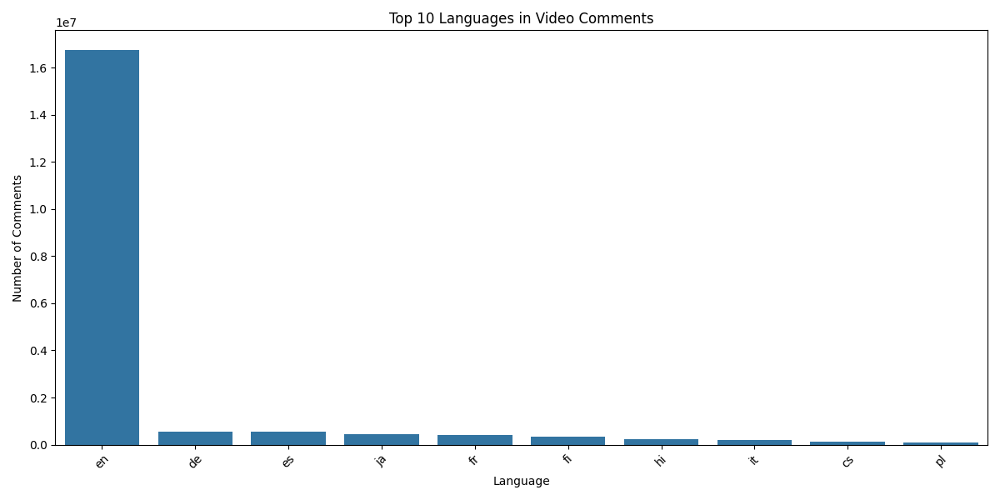
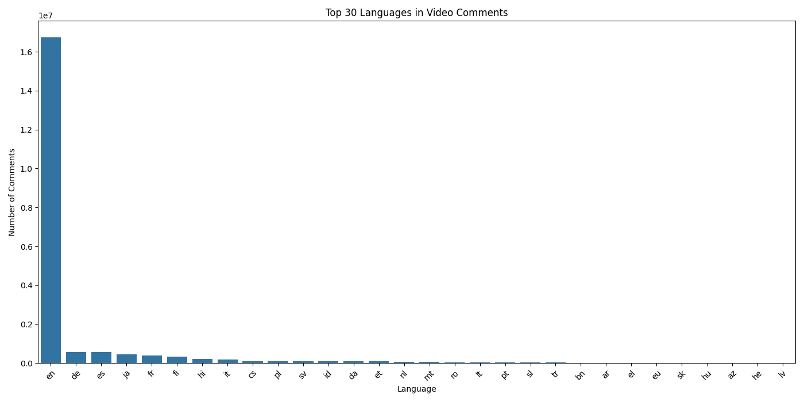
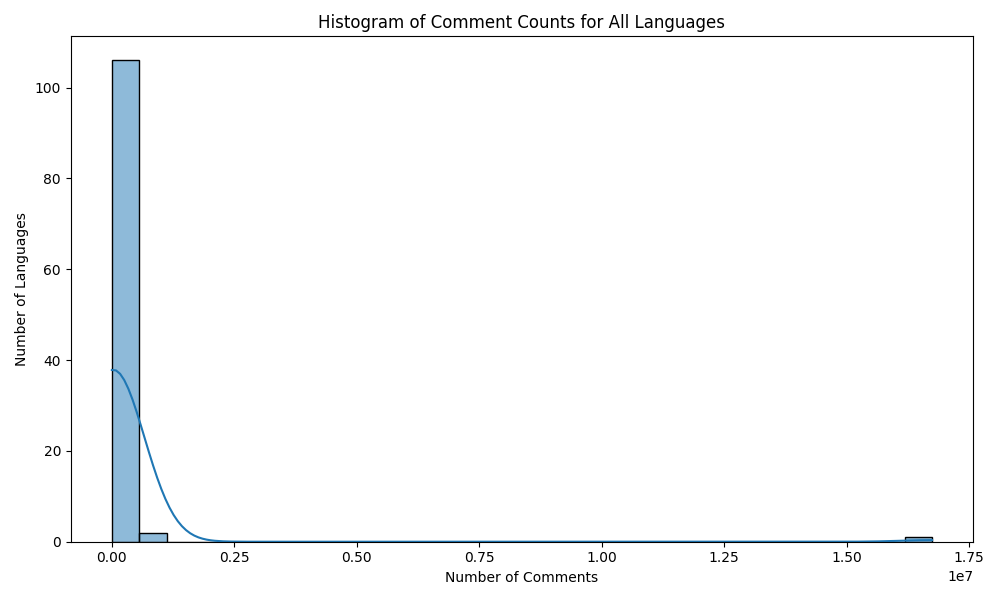
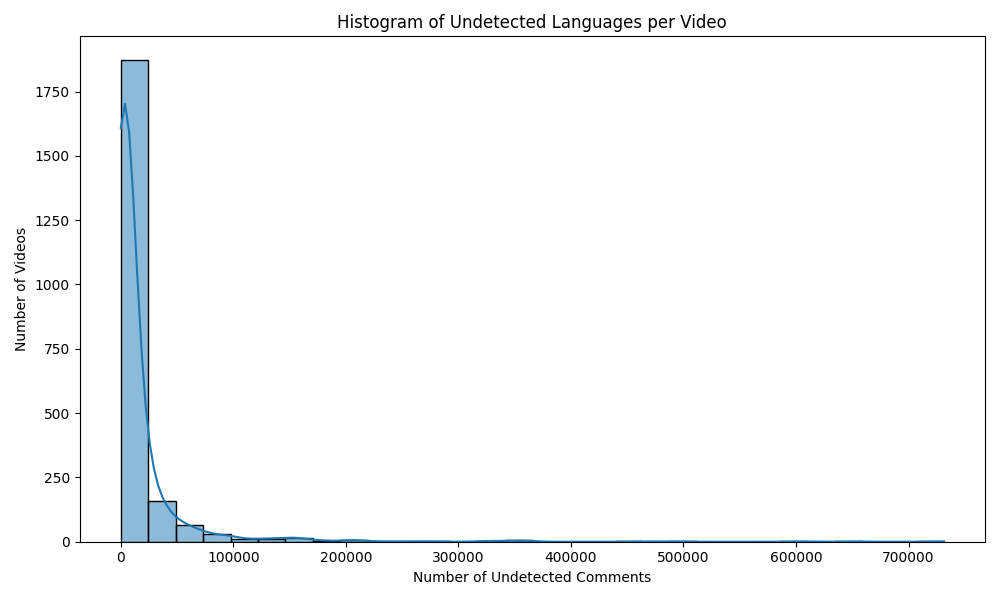

| Language | Comments | Percentage |
|---|---|---|
| en | 16,746,620 | 154.35% |
| de | 561,801 | 5.18% |
| es | 559,222 | 5.15% |
| ja | 443,203 | 4.08% |
| fr | 400,714 | 3.69% |
| fi | 327,286 | 3.02% |
| hi | 232,548 | 2.14% |
| it | 201,334 | 1.86% |
| cs | 111,908 | 1.03% |
| pl | 103,555 | 0.95% |



| Language | Coverage (%) |
|---|---|
| en | 99.95 |
| ja | 99.45 |
| fi | 99.41 |
| hi | 98.81 |
| de | 98.49 |
| es | 98.31 |
| fr | 97.95 |
| it | 94.84 |
| cs | 91.87 |
| sv | 85.16 |
| Language | Video Count | Percentage |
|---|---|---|
| en | 2102 | 36.1% |
| ko | 1469 | 25.3% |
| zh-cn | 424 | 7.3% |
| ja | 216 | 3.7% |
| de | 215 | 3.7% |
| mt | 166 | 2.9% |
| it | 125 | 2.1% |
| fr | 93 | 1.6% |
| es | 78 | 1.3% |
| he | 71 | 1.2% |
Video ID: QWZgoOoqgBU
Total comments: 746
Total languages: 16
Undetected languages: 1668

H29bXhbpNl8: 115,794 undetected (40,257 comments)
B1qq8IvzSz4: 128,330 undetected (40,426 comments)
yClGpsAUm84: 126,111 undetected (42,458 comments)
1WsSY1I17gw: 324,823 undetected (110,137 comments)
89fCmIOkL9o: 155,123 undetected (30,492 comments)
... (see terminal for full list)
No timestamp column found. Skipping trend analysis over time.